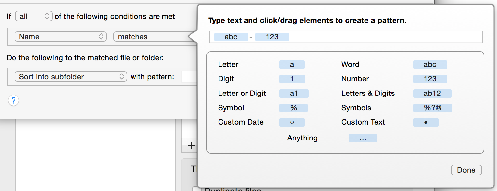
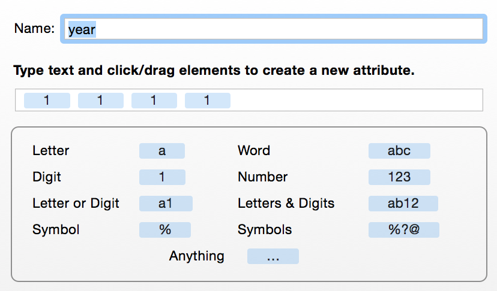
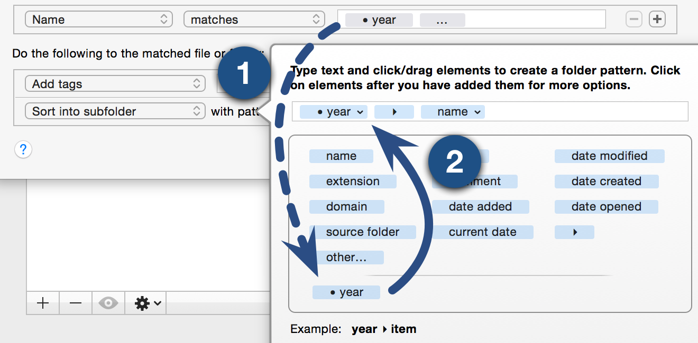

Using match patterns
Hazel provides the ability to match against patterns. For certain attributes, you can specify "matches" or "does not match" in the condition. When you edit the pattern, the interface will appear as shown here:

To specify text, just type in the field as you normally would. Any text entered will match that specific text. Below the field, you will find various tokens. You can use these tokens to specify different patterns of characters. Click on them or drag them into the field to specify the combination of characters that you want to match.
For instance, in the image above, the pattern will specify a word (a bunch of letters) followed by a dash followed by a number (one or more numeric characters). Using the pattern above, the name blah-123 will match but not 123-blah (does not start with letters), blah123 (no dash after the word) or blah- (no number at the end).
The Ins and Outs of Match Patterns
Using patterns for matching is powerful but it helps to know how they work to utilize them fully. Here are some things to keep in mind when using them:
- The "Anything" (…) pattern token matches any single character or group of characters, including nothing. If you have a pattern (123)(…), then text like "456" will match. The "Number" pattern token will match the "456" and the "Anything" token will match nothing.
- When using matches, patterns must match the whole text. If there is any text before or after the text you want to match and you don't care what that text is, use the "Anything" (…) pattern token before or after the pattern to match those arbitrary characters.
Using the pattern above, the text "45blah-123" will not match because even though the last part after the "45" does match, the pattern has to start from the beginning and encompass everything until the end. Likewise, "blah-123ab" will also not match because of the "ab" at the end.
- When using contains matches, the pattern only needs to match a part of the text. Also, a space in the pattern will match any number of spaces (or other invisible characters).
- Matches do not take the case (uppercase, lowercase) into account. a is the same as A.
Custom Attributes
If you notice in the image above that there's a special token in the lower right called "Custom". This allows you to create your own custom attribute. This attribute, when created, will be available for any patterns in any subsequent conditions or actions in this rule. In addition, it will be available as an attribute that you can use on the left hand side of any conditions after this one.
This is useful in cases where you want to save some text and insert it somewhere else. For example, let's say you have a bunch of files whose name starts with the year . You can define a token that will match the name and call it "year." This new token can then be dropped in to a "Sort into Subfolders" pattern to sort it into a folder based on year.
To create a custom token, just drag it into the field. This will pop up an editor:

Like the match pattern editor, you can specify a pattern here. In addition, you need provide a name to identify the token. You can think of it as a subpattern which you can attach special meaning to.
Here, the token is named "year" and it matches 4 consecutive numeric digits.

When you are done editing, (1) the attribute will appear with the name you specified in the other pattern interfaces which you can then (2) drag and drop in to your patterns. When Hazel actually runs the rule, Hazel will keep track of what text matched this token and when the action patterns are used, it will drop in the text that was matched.
Using the "year" example above, if the file has the name "1998-Expenses", then Hazel will assign the "year" attribute the value "1998" (the "year" token matches 4 numeric digits in a row). When sorting into subfolders, the file will be put in a folder called "1998." As you can see, using custom attributes allow you to pick apart different pieces of text and recombine them, substitute or reuse them as needed.
Custom Date Attributes
In addition to regular custom attributes, you can also create custom date attributes. These will allow you to match dates in various formats. When a custom date attribute is then used in a pattern in an action, it will be treated as a date. There, you can re-format the date into any form you choose.
Using the above example, we can accomplish the same thing by using a date token. Just drag in the date token:

Note that the tokens here are geared towards matching date elements. Dragging in the year token will give you a token which will match a year. Clicking on it after dropping it will give you different possible formats. In this case, you can match 2 or 4 digit years.
When used in a pattern in an action, the custom date attribute acts like any other date attribute. You can re-format the date or adjust it as needed. One case where this is useful is when the original month is given as a number, such as "01". When you reformat it, you can have it output in textual form, such as "Jan" or "January". For more details on formatting dates, see Editing dates.
You can also re-use custom attributes in other conditions in the same rule. You can read more on it in Using Custom Attributes.
See also
Using Custom Attributes
Editing patterns
Rule Reference
Rule Topics